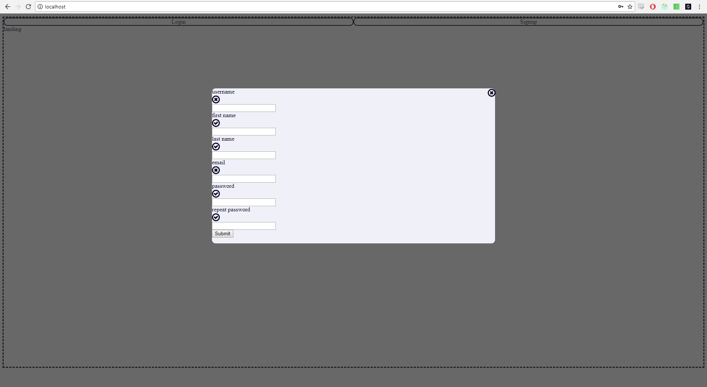
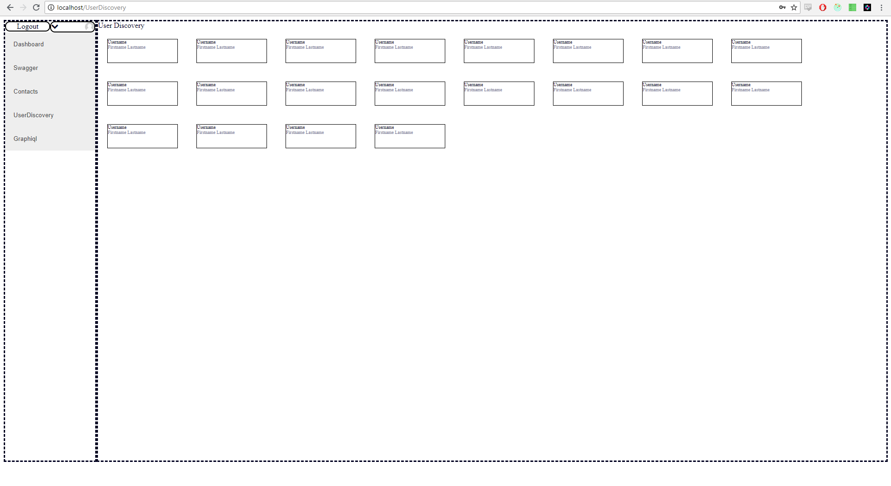

Have you ever wanted to retrieve files on your home computer while on the go?
Have you ever run into problems sending data to a friend?
Are you reluctant to put your data in the hands of centralized cloud providers?
Take back control of your data. Try Sharifyr.
We aren't interested in your life story. Pick a username to share with your friends. Give us an email if you want to be able to recover a lost account. The rest is up to you.
We make it easy to find those you care about. The data you see and share is limited to your circle of contacts.
Set up a background agent on your home desktop. As long as your home computer is on, you can download your files from anywhere you can access a browser.
Let's face it. You might not want to share your spring break photos with your grandmother. We give you the power to decide who has access to what from your hosted content.
Once you are all set up, we make it simple to search your entire peer network for content
Files move from peer to peer. By removing ourselves as a central resource bottleneck we can focus on what we do best: enabling our users to share their lives with each other.